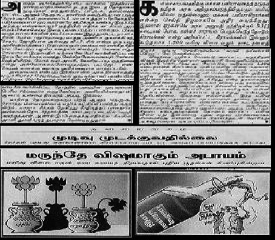

Latest News 
(updated on 15.10.2021)
Malkapuram Gandla Raja Sree, Sahadevareddy Adithya Swaroop and Nihal Shah Peediackal joined the team
to do their DDP projects
Second CNSL Meet - 2021 conducted between 13th-15th August 2021
Click here for more details
Sai Charan completed his DDP project on "Optical Character Recignition System for Telugu handwritten text"
Sai Varun completed his DDP project on "Article Segmentation in Newspapers and Forms"
Gubbala Roshan completed his DDP project on "OCR for handwritten english and deteriorated printed text"
Recent Tweets
2. Online Character Recognition of Telugu script based on Support Vector Machines
Rajkumar.J, Mariraja K., Kanakapriya, K., Nishanthini, S., Chakravarthy, V.S., A system for Online Character Recognition of
Telugu script based on Support Vector Machines, International Conference on Frontiers in Handwriting Recognition
(ICFHR 2012), Bari, Italy, September 18-20 2012.
Highlights
- Online Telugu handwriting recognition model by two schemas using Ternary Search Tree and Support Vector Machines respectively
- In three-tier vertical organization of a typical Telugu character, the stroke set are classified into 4 subclasses primarily
based on their vertical position
Flow chart diagram of different stages in two schemas
- The two schemas yielded overall stroke recognition performances of 89.59% and 96.69% respectively
- Character-level recognition performances of two schemas was 90.55% and 96.42% respectively
Ternary Search Tree representation of Telugu Character
4. LEKHAK [MAL]: A System for online recognition of handwritten Malayalam characters
Gowri Shankar, V. Anoop and V.S. Chakravarthy, “LEKHAK [MAL]: A
System for online recognition of handwritten Malayalam characters,”
National Conference on Communications, IIT, Madras, January, 2003.
Highlights
- Online Malayalam handwritten character recognition based on executing sequence of strokes presented in the character
- Shape based stroke features are extracted to identify the stroke type uniquely
Schematic representation of the character recognition model
- With the sequence of string representations of the strokes, the character is identified using string matching algorithm
Representation of Malayalam character 'R' (as in Rishi), as a string of shape features
A sample handwritten Malayalam text and its recognized output in LEKHAK
- The model can recognize the characters with 93% accuracy
6. A complete OCR system development for Tamil Magazine Documents
Aparna Kokku, V. Srinivasa Chakravarthy, A complete OCR system development for
Tamil Magazine Documents, In OCR for Indic Scripts, Venu Govindaraju and Srirangaraj
Setlur (Eds.), Springer, 2009.
Highlights
- A complete OCR pipeline model for Tamil magazines/documents with steps including
de-skewing, preprocessing, segmentation, character recognition, and reconstruction
- Used neural networks for text segmentation and character recognition
Schematic representation of steps involved

Text area segmentation from Tamil magazine page
Recognition of text
- Recognition accuracy of 97% reached when using the system
7. An oscillatory neuromotor model of handwriting generation
G. Gangadhar, D. Joseph, V.S. Chakravarthy, “An oscillatory neuromotor
model of handwriting generation,” International Journal of Document
Analysis and Recognition, Vol. 10, No. 2, November 2007.
Highlights
- Created a handwritten stroke generation with stroke velocities expressed as a
Fourier-style decomposition of oscillatory neural activities
- The neural network consisted of an
input or stroke-selection layer, an oscillatory layer, and the
output layer where stroke velocities are estimated
Network architecture
- Special timing network was proposed to set the network’s initial state, which is
crucial for accurate stroke generation
Schematic depicting of the dynamics of a single neural oscillator
Post-preparatory delay and its influence on error and stroke generation
Four and five-letter words produced by the handwriting network
- Suggested Neuro-biological significance of the process and architecture used and
its resemblance with human motor system
9. Tamil OCR
Highlights
- Trained word level recognition model based on Deep Learning
Model output for a given sample page from Thirukkural Urai book
- Model can recognize with the Character Error Rate of 0.1%
10. Telugu OCR
Highlights
- Word level recognition model based on Deep Learning
Model output for a given sample input
- Model can recognize with the Character Error Rate of 0.5%
11. Text paragraph detection and word segmentation
Highlights
- Text paragraph detection and word segmentation from Telugu newspaper/documents
Text paragraph detection in Telugu daily
Word level segmentation
2. Tamil handwriting recognition
- Annotate and augment Tamil handwriting data
- Train recognition model on top of Tamil OCR model
3. Handwriting generation model
- Create handwriting generation model using Oscillators and flip flop network
4. Form processing
- Use attentional search mechanism to locate the key fields in the form without context
1. Understanding Dyslexia by handwriting
- Model to recognize dyslexia based on child's handwriting
 Illustrations of elementary shape points
Illustrations of elementary shape points

 Graph representations of handwritten uppercase English alphabets
Graph representations of handwritten uppercase English alphabets
 Flow chart diagram of different stages
Flow chart diagram of different stages
 Identifying rules for writing the character /au/ in Devanagari script
Identifying rules for writing the character /au/ in Devanagari script

 Adjusting bounding boxes
Adjusting bounding boxes